The original, as published: DoITPoMS, University of Cambridge, Piezoelectric Materials. CC BY-NC-SA 4.0, https://creativecommons.org/licenses/by-nc-sa/4.0/. Imported as published, from https://www.doitpoms.ac.uk/tlplib/piezoelectrics/ https://www.doitpoms.ac.uk/tlplib/piezoelectrics/
The direct piezoelectric effect was originally discovered in 1880 by Jacques and Pierre Curie. It did not come into widespread use until the first world war, when quartz was used in SONAR. This was replaced in the second world war by Barium Titanate, and later by lead-based piezoelectrics that are in widespread use today.
When a piezoelectric is placed under a mechanical stress, the atomic structure of the crystal changes, such that ions in the structure separate, and a dipole moment is formed. For a net polarisation to develop, the dipole formed must not be cancelled out by other dipoles in the unit cell. To do this, the piezoelectric atomic structure must be non-centrosymmetric, i.e. there must be no centre of symmetry. Materials which are centrosymmetric, when placed under stress, experience symmetrical movement of ions, meaning there isn't a net polarisation. This can be seen in the following picture, in which there is an atom in a tetrahedral interstice. This material is ZnS, sphalerite, a Zn f.c.c. structure, which has an S atom in half of the tetrahedral interstices.
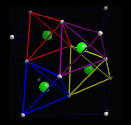
Locally, in each interstice, there is no centre of symmetry, so when a stress is applied, the motion of the central atom results in a dipole moment. Consider a single tetrahedra:
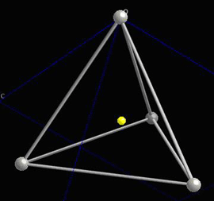
When the central atom moves, a dipole moment forms:
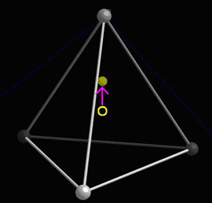
See the section on The dipole moment in the Ferroelectric Materials TLP for more information on the associated mathematics.
The polarisation is defined as the dipole moment per unit volume:
\[P = \frac{{\sum \mu }}{V}\]
In a piezoelectric which is not ferroelectric, there is no spontaneous polarisation. An applied stress therefore, will generate a polarisation in every unit cell of the crystal, assuming the crystal is homogenous. This polarisation is therefore the same throughout the crystal, and will cause a charge to be developed on the surfaces of the piezoelectric, due to the large number of small charges moving. If the piezoelectric is placed in a closed circuit and subjected to a stress, then a current will be recorded, produced by the movement of charge from one face of the crystal to another.
The polarisation can be described as the charge per unit area developed on the surface, as by the equation:
\[P = \frac{Q}{A}\]
This polarisation is directly proportional to the stress applied, as described by the equation:
\[P = d\sigma \]
where P = polarisation, d = piezoelectric coefficient, σ = stress.
However, while this is a direct effect, the stress can be multi-axial, so d can be an array of coefficients. (Also called a 3rd rank tensor, but the meaning of this is beyond the scope of this TLP.)
The reverse effect can also be seen if an electric field is applied to a piezoelectric. In a reverse process to the movement of atoms causing a dipole moment, the application of an electric field causes a dipole moment to be created in order to oppose the field. This dipole moment is created by the motion of atoms. This may result in the contraction or expansion of the unit cell. As this occurs throughout the crystal, there is a large change overall, which changes the shape of the crystal. (It must be noted however, that as there are a very large number of unit cells in the typical crystal, the actual shape change is small. The maximum strain usually seen is about 0.1%.)
This effect is described by the equation:
\[\varepsilon = dE\]
where ε = strain, d = piezoelectric coefficient, E = electric field.
Consider quartz, SiO2. In its non-stressed state, the ions are in positions which do not allow any net dipole moment to be formed.
The structure of quartz is shown below:
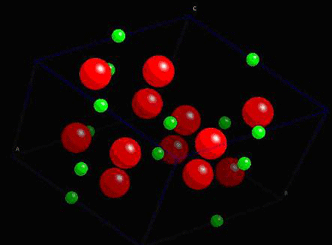
In quartz, there are tetrahedra of O atoms around Si atoms, which are able to twist and change shape when a stress is applied. The change in their position leads to the formation of net dipole moments as seen in the piezoelectric dipole moment section.
A tetrahedra of O atoms around a Si atom is marked within the quartz structure below:
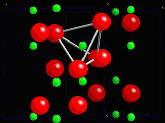
The dipole moment appears in every unit cell in the crystal and causes polarisation.
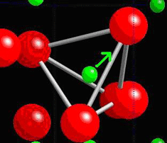
Ferroelectrics are spontaneously polarised, but are also piezoelectric, in that their polarisation changes under the influence of a stress.This is because while all ferroelectrics are piezoelectric, not all piezoelectrics are ferroelectric.
This relationship can be viewed as:
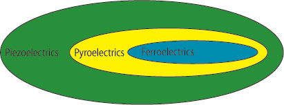
Pyroelectrics are materials which typically experience a decrease in polarisation when their temperature is increased. They will not be considered in this TLP but a short aside on pyroelectrics can be found in the Ferroelectric Materials TLP.
The piezoelectric effect in ferroelectrics is very dependent on its atomic structure. Depending on the orientation of a crystal, applying a compressive stress can increase or decrease the polarisation, or sometimes, have no effect at all.
To illustrate this, consider the tetragonal phase of BaTiO3, which is commonly seen at room temperature. It possesses a spontaneous polarisation, formed by the dipole moment in each unit cell. To make it simple, we will only consider a single unit cell first. Consider the unit cell of BaTiO3:
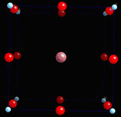
Below 120°C this unit cell becomes tetragonal, and gains a spontaneous dipole moment:
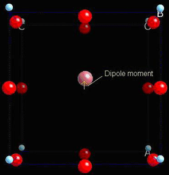
If the material is compressed along the x-axis, the important charged ions move further from their original positions, giving a higher dipole moment.
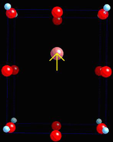
Compressed along the z-axis, the dipole moment decreases as the ions move towards their original position.
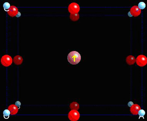
This shows how polarisation can easily arise on the atomic level.
Now, ferroelectric materials possess multiple domains. For background on this, read the TLP on Ferroelectric Materials.
To make it simple, we will only consider single crystal ferroelectrics. These, when first made, have domains of the form:
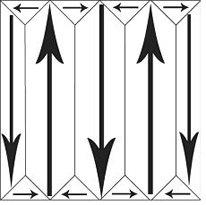
If a mechanical stress is applied to the ferroelectric, then there are domains which will experience an increase in dipole moment and some which will experience a decrease in dipole moment. Overall, there is no net increase in polarisation. This makes BaTiO3 useless as a piezoelectric unless it is put through some additional processing. This process is called poling. An electric field is applied to the ferroelectric as it passes through its Curie temperature, so as its spontaneous polarisation develops, it is aligned in a single direction:
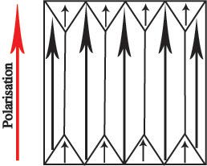
All of the domains in the piezoelectric have a dipole moment pointing in the same direction, so there is a net spontaneous polarisation. Now, when a mechanical stress is applied, the polarisation will increase:
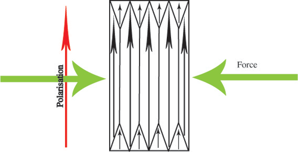
or decrease:
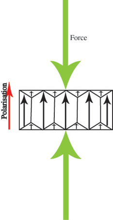
but still remain pointing in the original direction. This makes ferroelectrics into useful piezoelectrics.
The poling effect turns ferroelectrics into useful piezoelectrics. However, this means they can only be used within certain well defined limits. If piezoelectrics are used outside of these limits, the alignment of dipoles can disappear, leading to the depolarisation of the ferroelectric, and removing its piezoelectric properties. This can occur in a number of ways.
1. Thermal depoling
If the material is exposed to excessive heat, such that its temperature approaches its Curie temperature, the dipole moments regain their unaligned state. At the Curie temperature, a ferroelectric becomes entirely unaligned. In order to prevent this occurring, it is necessary to use piezoelectrics well below their Curie temperature.
2. Electrical depoling
A strong electric field, when applied in the reverse direction to the already poled material, will lead to depoling.
3. Mechanical depoling
The stress placed on a piezoelectric can lead to depolarisation.
Piezoelectrics are used both commercially and industrially. Commercially, their most common use is as gas lighters. These are capable of producing a spark, as in this animation:
Industrially, they are mainly used for imaging, mostly in medicine. They are used to produce ultrasound, which is used to check on unborn babies. In a non-medicinal manner, it can be used to detect cracks.
However, this effect can be utilised, without generating the wave with the piezoelectric. In this way, the piezoelectric is used solely as a mechanical sensor. As it picks up a mechanical deformation, it generates a voltage, and this can be detected, allowing them to be used as sensors.
Another very common use of piezoelectrics is in watches. A small piece of quartz crystal is used to regulate the movement of hands, as its shape will oscillate at some known frequency when a particular voltage is applied. This oscillation can be translated into a very accurate timekeeping device. For more information, see this external web page: http://electronics.howstuffworks.com/quartz-watch.htm
A final possible use is that of an actuator. If the electric field applied over a piezoelectric is not oscillated, but instead simply applied, the change in shape of the piezoelectric can be used to move objects. This is useful in micro-scale positioning, as the change in shape of the piezoelectric can be measured in microns.
For more information, see: https://www.piceramic.com/en/piezo-technology/properties-piezo-actuators/
PZT, or Lead Zirconium Titanate, Pb(ZrxTi1-x)O3, is the most widely used piezoelectric. It has the perovskite structure, with Zr and Ti ions randomly placed in the B sites in perovskite.
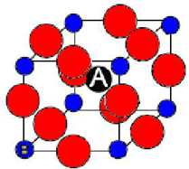
Its composition is varied by altering the value x. This greatly changes the properties, giving the phase diagram below.
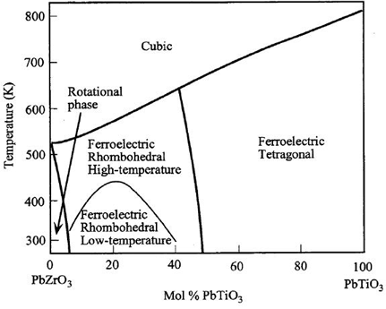
If the PZT is used at 50% Mol PbTiO3, then it is near the rhombohedral/tetragonal phase boundary. This allows it to form many different polarisation states, in the <100> and <111> directions. There are many possible orientations for dipole moments to form, giving easy poling, and making it a useful piezoelectric.
We have considered a microscopic picture for piezoelectrics, and we have seen some examples of the many applications in which they are exploited. Ceramic piezoelectrics (e.g. PZT) normally contain lead, but there are now lead-free piezoelectrics, e.g. with bismuth replacing the lead. There are also piezoelectric polymers in which much larger strains come at the cost of much lower stresses.